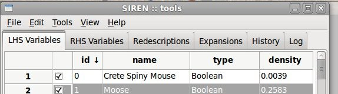
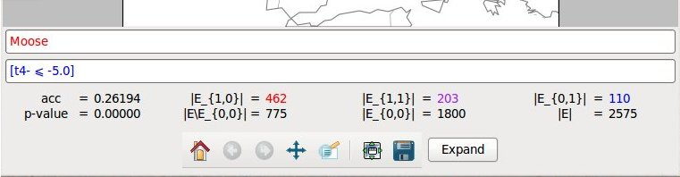

The Tools window is unique, it is the main siren window. It contains several tabs.
Two tabs contain lists of variables.
The main means to manipulate variables or redescriptions, depending on which tab you are currently viewing, are available via the Edit menu and the contextual menu opened by right click.
List items can be enabled/disabled by checking/unchecking the corresponding box in the left column. All items in a list can be enabled/disabled simultaneously. Lists can be sorted based on the value of the different fields displayed by clicking on the column header.
Redescriptions can cut, copied, and paste from and to different positions in the lists and from one list to the other and vice-versa. All disabled redescritions can be deleted at once.
A Map window allows to visualize a redescription, to edit it and launch mining and expansion. Several Map windows can be opened simultaneously with different redescriptions.
A Map window can be opened with a double click on a variable or redescription in a list from the Tools window. Edits made to a redescription will be reflected to the item in the list.
Statistics of the redescriptions are shown below the map.
Both queries can be edited using the text boxes. If the syntax of a query is incorrect, Siren will not be able to parse it and it will fall back on the previous correct query. Queries are parsed when ENTER is pressed, in order to avoid parsing error due to partial edits.
Expansion can be started by pressing the expand button. The expansion will be delegated to a background task. It can be interrupted via the interface menu Tools, where running task are listed. Redescriptions generated during the expansion will be appended to the list of redescriptions in the Expansion tab.
The main menu of Siren is at the top of the Tools window.
Here is a summary of functionalities available throught the menu.
The File submenu provides import, export, opening and saving functionalities.
It contains the following items:
The content of the Edit submenu depend on the tabs currently viewed.
If the tab contains redescriptions or variables it will allow to open the select item in a Map window or to enable/disable the selected item or all items in the list.
If the tab contains redescriptions, it will also allow to filter the redescription and to copy, cut and paste them.
These functionalities can also be accessed via the contextual menu on right-click.
In any case it will allow to set the preferences.
Depending on the tab currently viewed the Edit submenu contains some of the following items:
The process submenu contains a list of running task and allows to interrupt any of them.
The view submenu contains a list of tabs and allows to show or hide any of them.
The help submenu provide access to this help and to more information about Siren and licensing.